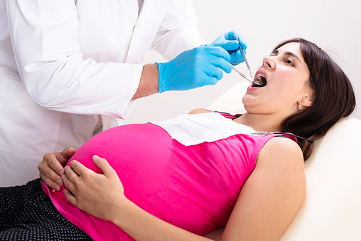

임산부 구강검진 시기
마취 후 주의사항
임신 중에도 치과 치료는 가능합니다. 하지만 유산 가능성이 많은 임신 초기(임신 1~3개월)와 임신 후기 (임신 8~10개월)에는 피해야 합니다. 그러므로 임신 중 치아에 문제가 생기면 즉각 전문의의 상담을 받는 것이 좋습니다.
이보다 더 좋은 것은 임신 전이나 결혼 전에 미리 구강 검진을 통해 충치나 잇몸 질환을 치료하는 것입니다. 미리 사랑니를 뽑거나 정기적인 스케일링을 통해 치아를 관리 해두는 것이 좋습니다. 엄마의 구강 상태와 구강 위생 습관은 앞으로 태어날 아기의 치아 건강과도 관련이 있으므로 주의합니다.
| 임신초기 (1~3)개월 |
태아의 장기가 형성되는 비안정적인 상태이기 때문에 간단한 응급치료나 예방치료에 중점 |
| 임신중기 (4~6)개월 |
안정기로 전문의와 협의 후 치과 치료가 가능 스케일링, 충치 치료 등의 간단한 치료는 가능하나, 과도한 약물이나 방사선 촬영 등은 제한 |
| 임신후기 6개월 이후 |
임신중독증, 조산, 자제성 저혈압이 나타나는 시기로 되도록 치료 제한 |